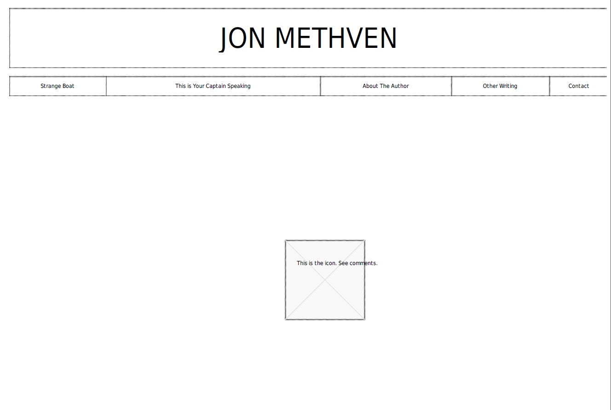
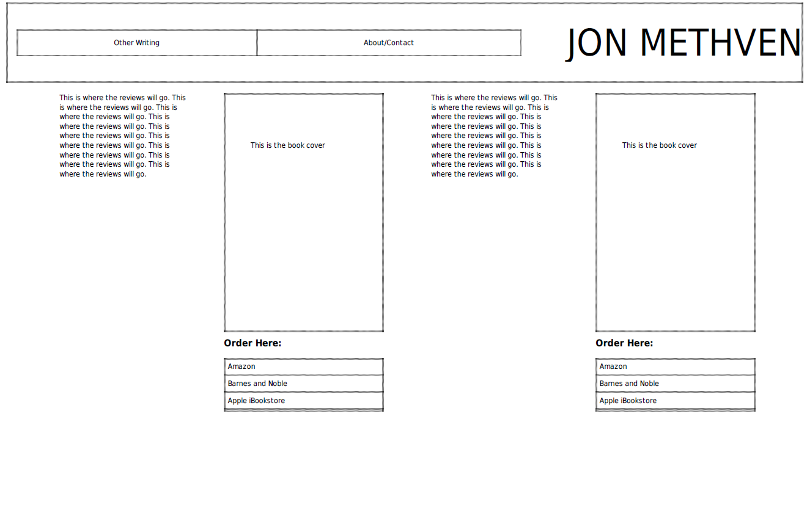
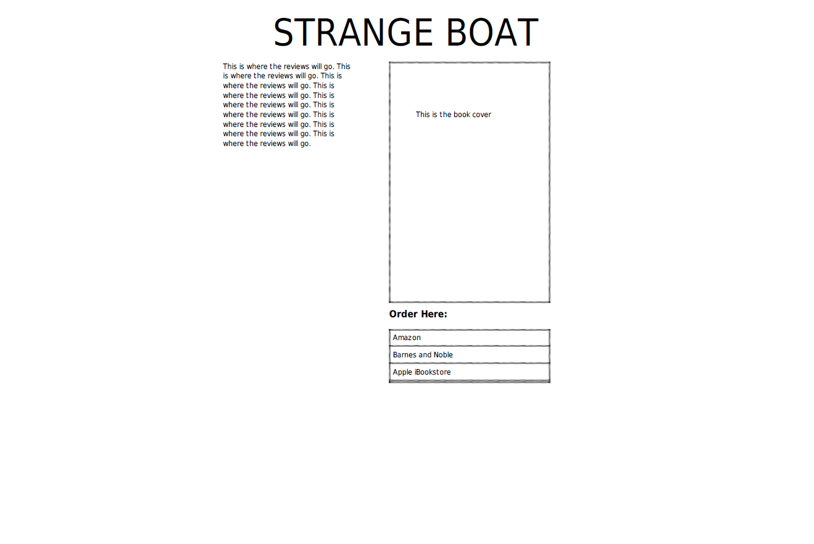
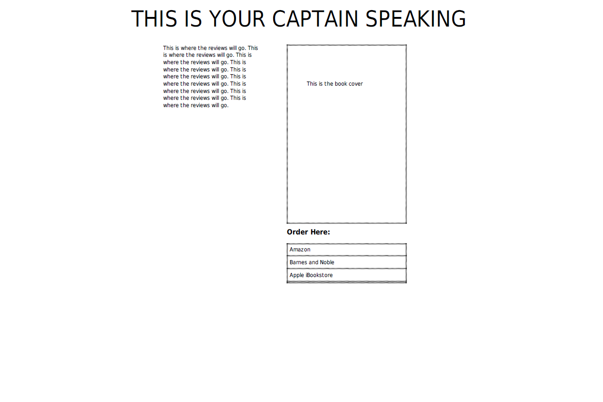
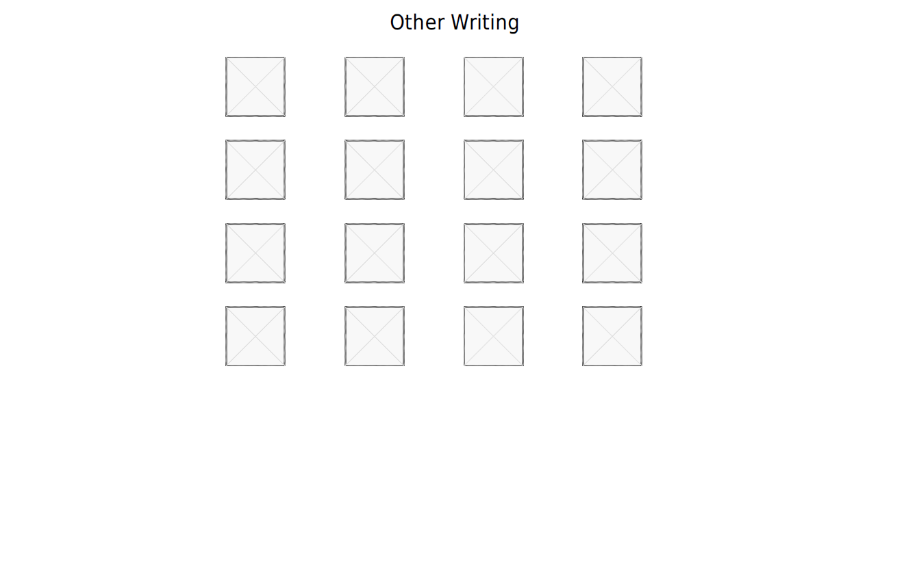
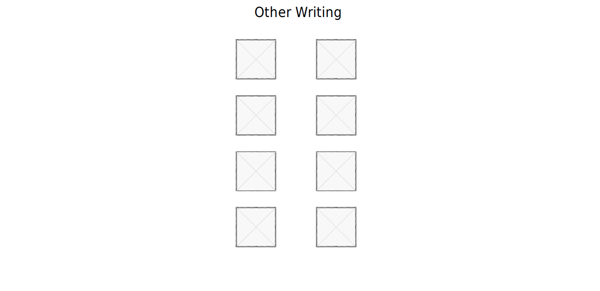
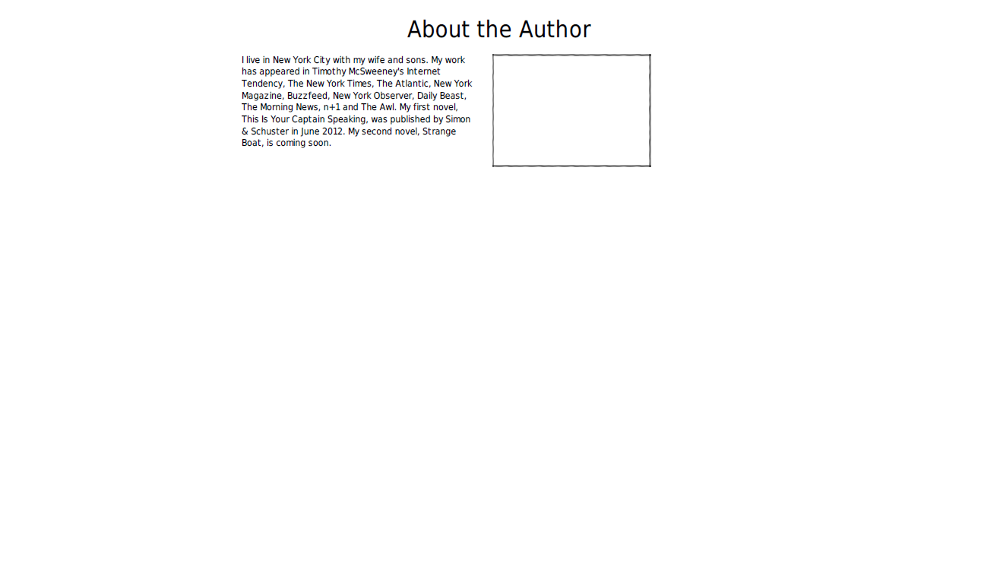
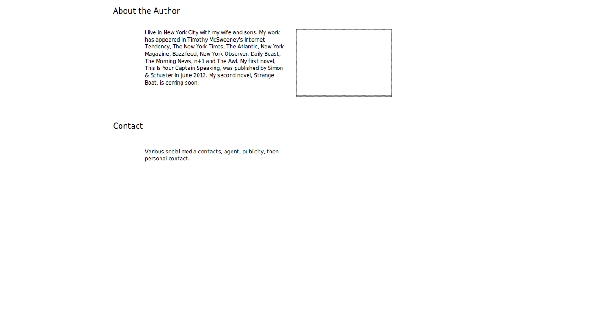

Unit 2
Unit 2
Which two websites are you most inspired by?
I chose websites of two writers, Jonathan Miles and Lexia Snowe, since I'm trying to improve my own site.
How do they exhibit effective use of space, size or balance?
Johnny Miles
In this website, the background photograph is very eye-catching, and I like the visual image of the garbage basket. There's a lot of extra space and the links at the top beneath the name are balanced on the page. It's a simple but elegant design.
This website does not render well on an iPhone. The image is not balanced on the screen and the links at the top are not legible. However, this writer is a novelist, and perhaps the thinking is - readers will not visit the site on a phone, but rather from their computer.
Lexia Snowe
For this writer, not a novelist, but rather a Hollywood writer who operates in quick, short taglines. The use of space has everyone a reader could need to learn about the writer, from a short, one-sentence biography, to projects. The vertical nature of the website is easier to navigate.
The picture at the top seems a bit large for what it conveys. I don’t get the message. However, it does render well on an iPhone and much easier to navigate.
What makes them similar and different?
- Completely different message for the viewer - one of a loveable novelist, the other of an action scriptwriter.
- While they both keep the viewer on the same page, the first site does so with a pop-up window that I don't really love. The font is hard to read as the background photo is still visible through the text. The second one is one-pager but allows the user to easily flow from section to section. This is called jquery? I'm not sure what that is, but in other websites I’ve seen, I like this.
- In both sites, I do like the way the writers have split up the message to readers into various tabs. I'd like to direct readers to each published book, as we well as online writing and contact information.
What makes one solution more clear than the other?
I like the way the first site looks better than the second. But I like the way the second site functions better than the first. Combining the two - a very simple, elegant look of the first with the one-page flow of the second - seems like the most sensible solution.
Thumbnail Sketches
- Homepage 1

The icon at the bottom would be the focal point of the page. The tricky party is box at the bottom. What I want this to be is a stick figure-like icon typing, and above the icon where the sections are, thought bubbles appearing and linking to the sections. Does this make sense? The banner and links at the the top would provide hierarchy for the page. The links would appear as thought bubbles and flow down the page, using JQuery, to the various sections. I'm not sure how to do that, but I was told I could link to and customize the jquery library.
- Homepage 2

- Homepage 3

- Homepage 4

This would be another take on the homepage. Since the object of the website is to advertise published books, the novels would be the focal point of the page. The Links in the top banner would provide viewers with other pertinent information.
- StrangeBoat 1

In the first homepage scenario, there are links to each of the books. The book would be the focal point, and the viewer could read past reviews and find links where to find the book.
- Captain 1

Same scenario as the above book page.
- Other Writing 1

Admittedly, this page lacks a focal point. But for me, it would serve as more of a "utilitarian" part of the website. Currently, I have links to all my online writing. And what I would like to do is order it by each media outlet: New York Times, The Atlantic, McSweeneys, etc. Each of the boxes on this page would serve as an icon, and when clicked, the viewer could have a dropdown or list of articles I've written at that specific publication.
- Other Writing 2

See above, a more vertical look.
- About the Author 1

This is a page to give viewers some information about the author. The focal point is the author photograph and a basic biography.
- Contact 1

This, again, is more of a utilitarian page, giving viewers and clients all the different ways to contact me or my representation. In hindsight, an image of a pencil, or a typewriter, would have served as a focal point, giving viewers the image of what this page is for.
- About the Author 2

This page combines the About the Author and Contact into one page. If I'm able to build the jquery version of the site, where all the content flows into one page for the reader, this might make more sense to simplify the navigation.